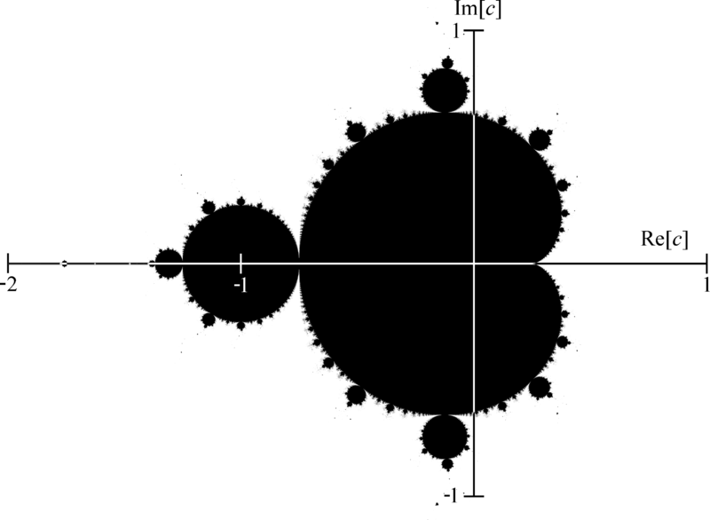
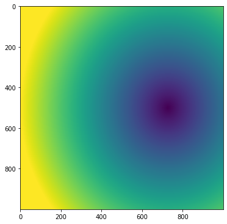
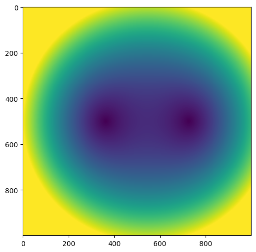
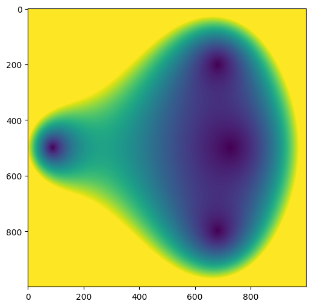
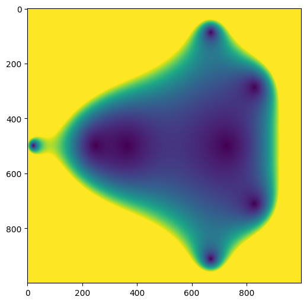
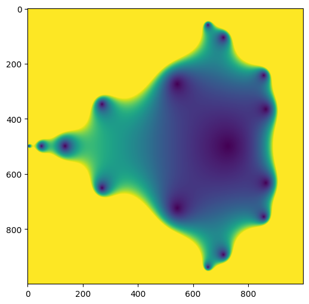
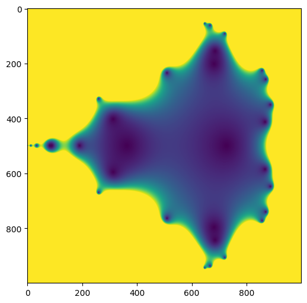
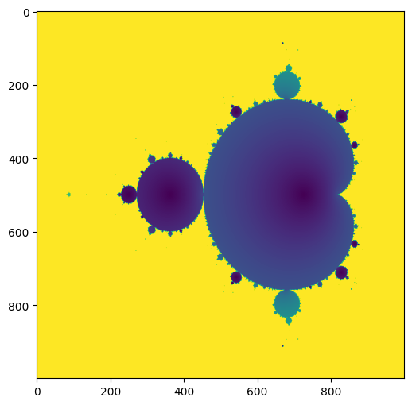

Introducción
En este artículo visualizaremos el conjunto de Mandelbrot mediante un código sencillo de Python. La librería NumPy será de utilidad, ya que nos permitirá hacer cálculos en forma matricial. También usaremos la librería Matplotlib para hacer la visualización del conjunto.
Con la idea de contextualizar el concepto de fractal, en lo que resta de esta introducción se discuten brevemente aspectos generales de éste concepto. Dicha discusión no es en absoluto crucial para poder seguir el ejercicio de visualización del conjunto de Mandelbrot, que constituye el propósito principal de este artículo. El lector que así lo deseé, puede omitir la lectura de este apartado sin que ello afecte la comprensión del resto del artículo.
El conjunto de Mandelbrot pertenece a un tipo de objetos geométricos llamados fractales, que presentan patrones que se repiten a diferentes escalas. Ya desde inicios del siglo XX se conocían objetos matemáticos con propiedades fractales, tales como la gráfica de la función de Weierstrass y el “copo de nieve de Koch”, que presentan la peculiar propiedad de tener dimensión fraccionaria. Pero en aquélla época el concepto de fractal aún no se había establecido.
Más tarde en las décadas de los 60 y 70 del siglo pasado, matemáticos como Benoit Mandelbrot y Gaston Julia aportaron avances teóricos importantes en el estudio de los fractales, a la vez que ponían en evidencia la ubicua presencia de éstos en la naturaleza. En efecto, Mandelbrot hacía notar que muchas de las estructuras que encontramos en la naturaleza no se dejan describir adecuadamente mediante las formas regulares de la geometría euclídea, sino que se asemejan más a aproximaciones fractales.
Costas, ríos, nubes, montañas, vasos sanguíneos, árboles y manchas de pintura en una pared; son todos ellos ejemplos de objetos que poseen características propias de los fractales. Intuitivamente, esto quiere decir que las formas que hacen reconocibles a estos objetos no varían considerablemente al cambiar la escala: un árbol se sigue viendo como árbol ya sea que lo veamos de lejos o de cerca (por supuesto, dentro de ciertos límites); lo mismo ocurre con una montaña o una mancha en la pared. Cuando una estructura tiene la propiedad de repetirse a diferentes escalas se dice que es autosimilar.
Seguramente se habrá notado que hasta ahora hemos esquivado, no sin cierta dosis de torpeza, la cuestión de dar una descripción precisa de lo que es un fractal. Ante esto damos dos justificaciones: primero, no es el propósito de este artículo dar una descripción teórica exhaustiva de los fractales, suponiendo que fuera posible realizar tal cosa en un sólo post. Segundo, aquí adoptamos la proverbial actitud de que “una imagen vale más que mil palabras”, la cual resulta particularmente acertada y de utilidad cuando queremos acercarnos a la geometría fractal.
Finalmente, sabemos que habrá más de un lector que no termine de sentirse cómodo leyendo un artículo sobre fractales en el cual el autor no se toma la molestia de, por lo menos, mencionar la definición de lo que se entiende por fractal. Para dicho grupo de lectores, a continuación enunciamos la definición que el propio Mandelbrot propone:
Definición 1 (Fractal) Un fractal es un conjunto cuya dimensión de Hausdorff-Besicovitch es estrictamente mayor que su dimensión topológica.
Cumplido este trámite, nos apresuramos a decir que esta esotérica definición no será en absoluto necesaria para los propósitos de este artículo. Podemos continuar tranquilamente aun si no sabemos qué cosas son la dimensión de Hausdorff-Besicovitch y la dimensión topológica.
Conjunto de Mandelbrot
El conjunto de Mandelbrot es probablemente uno de los fractales más populares y estudiados.
El conjunto de Mandelbrot, al cual en adelante denotamos por \(M\), es un subconjunto del plano complejo \(\mathbb{C}\). Su definición se da a partir de un proceso recursivo: se define una familia de sucesiones complejas parametrizadas por un número \(c \in \mathbb{C}\) de la siguiente forma:
\[ \begin{align*} z_0 &= 0 \\ z_{n+1}(c) &= z_n^2+c \end{align*} \tag{1}\]
El conjunto \(M\) está formado por aquéllos valores de \(c\) para los cuales la sucesión \(\{z_i(c)\}_{i=0}^\infty\) está acotada. Por ejemplo, \(c=1\) da lugar a la sucesión no acotada \(\{0, 1, 2, 5 ,26, … \}\), por lo cual 1 no pertenece a \(M\). En cambio, \(c=-1\) sí pertenece a \(M\), ya que produce la sucesión acotada \(\{0, -1, 0 -1, … \}\).
Se puede demostrar que \(M\) está contenido en el disco de radio 2 centrado en el origen, es decir, \(c \in M\) si y sólo si \(|z_n(c)|\le2\) , para todo \(n \ge0\). Este hecho será clave más adelante para la visualización de \(M\).
Cazando al conjunto \(M\)
Lo siguiente es contar con un algoritmo que nos permita interrogar a puntos del plano complejo para determinar si pertenecen o no al conjunto \(M\). La primera cuestión a tratar es: ¿A qué puntos del plano complejo vamos a interrogar?
En realidad, nuestra cacería de \(M\) será bastante artificial, ya que no pretendemos ser los primeros exploradores tratando de caracterizar a \(M\), por lo que no dudaremos en usar cualquier información ya conocida que nos sea de utilidad para simplificar la búsqueda. Por ejemplo, podríamos decidir interrogar solamente a puntos dentro del disco de radio 2 centrado en el origen (véase el último enunciado del apartado anterior). Pero, ya decididos a tomar cualquier atajo posible, y sin ruborizarnos ni siquiera un poco, haremos algo mucho más tramposo: echaremos una ojeada a una imagen ya producida del conjunto de Mandelbrot, por ejemplo, la que aparece en wikipedia:

Así, con la enorme ventaja de contar con una imagen del conjunto que queremos obtener, podemos acotar aún más la región de búsqueda: de acuerdo a la figura anterior, vemos que si restringimos la cacería al rectángulo dado por: \(\{-2 \leq Re(c) \leq 0.75\}\) y \(\{ -1.25 \leq Im(c) \leq 1.25 \}\), podemos obtener una buena representación de \(M\).
Para tomar puntos dentro de esta región, construimos en Python un arreglo matricial. Pero antes, importamos las librerías que vamos a utilizar:
import numpy as np
import matplotlib.pyplot as plt
import matplotlib
from matplotlib import colorsPara construir el arreglo matricial, hacemos:
xmin, xmax, xcantPuntos = -2.00, +0.75, 1000
ymin, ymax, ycantPuntos = -1.25, +1.25, 1000
x = np.linspace(xmin, xmax, xcantPuntos)
y = np.linspace(ymin, ymax, ycantPuntos)
X, Y = np.meshgrid(x,y)
C = X + Y*1j Con el script anterior hemos construido un arreglo matricial C que contiene una malla uniforme de números complejos escogidos dentro de la región de búsqueda.
Consideremos la Ecuación 1, y hagamos una iteración de la sucesión correspondiente a cada punto del arreglo C. Comenzamos construyendo un arreglo Z del mismo tamaño que C, cuyos valores inicialmente son todos cero:
Z = np.zeros((xcantPuntos, ycantPuntos))Ahora ejecutamos una iteración:
Z = Z**2 + CNotar que con la instrucción anterior, estamos generando en un sólo paso la primera iteración de todas las sucesiones correspondientes a todos los puntos del arreglo C . Esto es una de las ventajas de usar Numpy para poder trabajar matricialmente.
Evidentemente, lo que sucede en la primera iteración es que Z simplemente toma los valores de C.
Visualicemos los módulos de los valores contenidos en Z:
M = np.abs(Z)
plt.figure(figsize=(6, 6), dpi=100)
plt.imshow(M)
plt.show()
Ahora requerimos dos cosas: aumentar el número de iteraciones y discriminar los puntos que no pertenecen a \(M\). Para esto último, podemos identificar en qué casos el valor generado en la iteración actual ha sobrepasado la frontera del círculo de radio 2. A estas posiciones del arreglo les reasignamos el valor de 2, con lo que aseguramos que en la siguiente iteración el valor obtenido seguirá fuera del círculo de radio 2, y visualizamos los módulos de los nuevos valores:
Z = Z**2 + C
idxg = np.greater_equal(abs(Z), 2)
Z[idxg] = 2
M = np.abs(Z)
plt.figure(figsize=(6, 6), dpi=100)
plt.imshow(M)
plt.show()
Ejecutamos de nuevo el script anterior (iteración 3):

Iteración 4:

iteración 5:

Iteración 6:

Poco a poco va emergiendo en la imagen el conjunto de Mandelbrot. Los puntos que no pertenecen al conjunto se colorean de amarillo. Hasta ahora hemos realizado muy pocas iteraciones, por lo cual es de esperarse que haya aún muchos puntos que aparecen dentro de \(M\), pero que en realidad no debieran estar ahí. Para tener una imagen perfecta de \(M\), necesitaríamos generar una cantidad infinita de puntos de cada una de las sucesiones. Como esto no es posible, sólo nos queda aumentar el número de iteraciones para que el conjunto se visualice cada vez de forma más cercana al conjunto exacto.
Por ejemplo, aquí se muestra el conjunto \(M\), después de 500 iteraciones:

Otra forma de visualizar \(M\)
También podemos visualizar el conjunto de Mandelbrot al registrar las iteraciones necesarias para que la sucesión asociada a un punto \(c\) escape del círculo de radio 2.
En el siguiente código construimos la función mandelbrot(iter, m), en la cual se incluyen las dos formas de visualización descritas anteriormente.
Además del número de iteraciones, el usuario puede definir como parámetro de entrada el exponente en la familia de sucesiones, es decir, vamos a generalizar a sucesiones de la forma:
\[ \begin{align*} z_0 &= 0 \\ z_{n+1}(c) &= z_n^m+c \end{align*} \]
donde \(m\) puede ser cualquier entero.
def mandelbrot(iter, m):
xmin, xmax, xcantPuntos = -2.00, +0.75, 1000
ymin, ymax, ycantPuntos = -1.25, +1.25, 1000
x = np.linspace(xmin, xmax, xcantPuntos)
y = np.linspace(ymin, ymax, ycantPuntos)
X, Y = np.meshgrid(x,y)
C = X + Y*1j
Z = np.zeros((xcantPuntos, ycantPuntos))
N = np.zeros((xcantPuntos, ycantPuntos))
for k in range(iter):
Z = Z**m + C
idxg = np.greater_equal(abs(Z), 2)
Z[idxg] = 2
idx = np.less(abs(Z), 2)
N[idx] = k
M = np.abs(Z)
plt.figure(figsize=(6, 6), dpi=100)
plt.imshow(M)
plt.show()
plt.figure(figsize=(6,6), dpi=100)
plt.imshow(N)
plt.show()Veamos algunos ejemplos.
mandelbrot(20, 2)Observamos que con la segunda forma de visualizar el conjunto \(M\), la parte amarilla representa los puntos cuya sucesión asociada no ha escapado después de 20 iteraciones.
Al cambiar el exponente de la familia de sucesiones, podemos generar visualizaciones interesantes de otros conjuntos:
mandelbrot(20, 3)mandelbrot(20,-4)Interesantemente, para valores negativos de \(m\), la visualización por tiempo de escape no parece ser muy informativa.
Conclusión
Hemos presentado una forma sencilla de visualizar el conjunto de Mandelbrot y de algunos otros conjuntos que resultan al cambiar el exponente de la sucesión dada por la Ecuación 1. Para ello, se aplicaron funciones básicas de las librerías NumPy y Matplotlib.
En términos estéticos, quizá los resultados logrados aquí no se acercan en calidad a los de otras propuestas en las que también se utiliza Python. Nuestro objetivo aquí es ejemplificar cómo el uso de NumPy y Matplotlib nos permite atacar una tarea no trivial de visualización mediante un código bastante sencillo.
Esperamos que con lo aprendido hasta aquí el lector, si lo desea, pueda ahondar un poco más en este interesante tema o bien simplemente que pueda pasar un rato divertido generando sus propias visualizaciones.